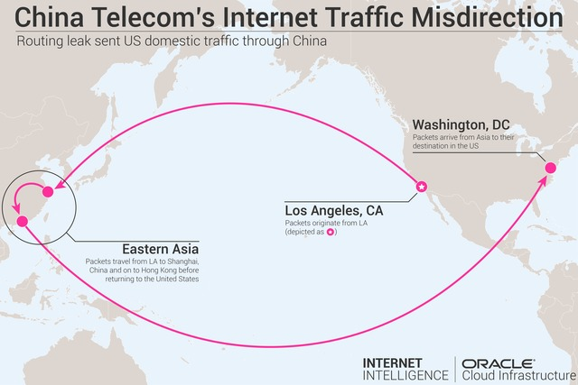
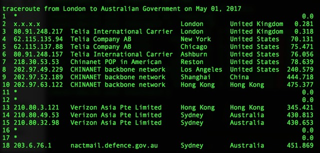
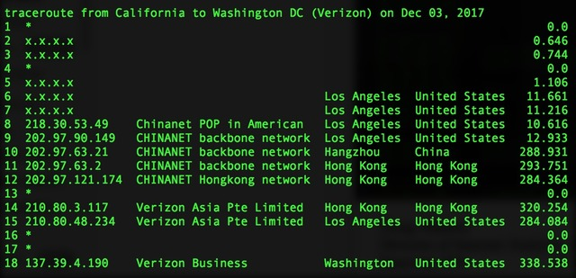

明天开始放假，俺选在9月最后一天，发这篇3季度的《近期安全动态和点评》。
这篇有点长，外部链接有点多。来不及看完的同学，可以在假期慢慢看。
大名鼎鼎的《连线》杂志发了一篇文章（如下），介绍 Windows 10 的隐私选项。
《The Windows 10 Privacy Settings You Should Check Right Now @ Wired/连线》
编程随想注：
这些选项都涉及【数据收集】，并且默认是【启用】状态。
即使把这些选项都关掉之后，你依然无法确保——微软不再收集你的隐私数据。但“禁用”总比“启用”更保险一些。
至于那些善于捣鼓技术的同学，完全可以告别 Windows，并切换到某种 Linux 发行版之下。
《AI 监视扩大到全世界 @ Solidot》
面对技术监控的这种趋势，有必要再次重温 EFF 创始人的那篇《赛博空间独立宣言》。
《每周转载：EFF 创始人约翰·佩里·巴洛和他的【赛博空间独立宣言】》
《南京中国药科大学试点面部识别 @ Solidot》
《瑞典禁止学校部署面部识别技术 @ Solidot》
编程随想注：
上述两条新闻，放在一起对照，令人印象深刻啊。
《ZAO App 换脸玩大了，陌陌被工信部约谈要求自查整改 @ 搜狐》
《网店出售人脸数据引发争议》
《More than 1,000 Android apps harvest data even after you deny permissions @ CNET》
编程随想注：
文中提到了某些技巧，比如说——
某个 app 虽然没有权限拿到“地理位置信息”，但可以收集手机中拍摄的照片，从照片的 EXIF 元数据中可以提取到“地理位置信息”。
咱们还可以更进一步设想——
如果该 app 有照相机的权限，就可以定期拍照，提取 EXIF 元数据之后再删除照片——就可以不断跟踪用户的位置变化。
《国家计算机病毒中心发布违规 APP 和 SDK 名单 @ 新京报网》
编程随想注：
在上一期的《近期安全动态和点评》中才说到：
如今更牛逼了，新疆警方不仅可以随意盘查手机，还可以在手机上强制安装某个【监控软件】。以下是外媒的报道。
《中国边警在游客手机中安装监控 App @ 德国之声》
上述报道中提及了监控软件名为【蜂采】。下面这篇提到了这款软件的出处。
《在新疆，你手机上不能有的73000项内容 @ 纽约时报》
五眼情报联盟（美国、英国、加拿大、澳大利亚、新西兰）7月底8月初在伦敦举行峰会，讨论“加密聊天应用”所带来的挑战。
美国佬（NSA）偏爱的是【算法后门】——类似的事情，NSA 已经干过好多次了（当年斯诺登曝光的【棱镜门丑闻】，包括其中一些）。
而英国佬（GCHQ）提出了一个更狡猾的【ghost protocol】解决方案——通过修改聊天服务器的软件，在“单独聊天”或“群聊”时候，让某个【幽灵用户】参与其中。正常用户看不到这个 ghost，但 ghost 可以看到其它用户的聊天内容。
知名的密码学大牛 Bruce Schneier 在其个人网站连发两篇帖子（如下），表达了【反对意见】。
《Facebook Plans on Backdooring WhatsApp @ Schneier》
《More on Backdooring (or Not) WhatsApp @ Schneier》
编程随想注：
俺本人反对“互联网监控”，不管是来自民主政权还是专制政权。
更多的讨论，参见4年前（2015）写的《“对抗专制、捍卫自由”的 N 种技术力量》
另外，经热心读者提醒，补充一下：
“5眼联盟”已经逐步扩大到“9眼联盟”、“14眼联盟”（总之就是——【眼】越来越多了）具体参见维基百科的这个链接。
《Facebook 支付50亿美元巨额罚款，扎克伯格失去隐私权方面的最终决定权 @ 搜狐》
《谷歌旗下YouTube因侵犯儿童隐私被罚款1.7亿美元 @ VOA/美国之音》
斯诺登的自传《永久记录》（洋文“Permanent Record”）最近开始发售（此书的封面，是他的大头照，如下）
然后，美国政府对 Edward Snowden 提起民事诉讼，反而引发“史翠珊效应”，导致更多人关注此书。
这本书刚出来，俺还没去找电子版。有空的话，会把电子版分享到俺的网盘。
引申阅读：
《中美政府信息监控的差异——“棱镜门”丑闻随想》
《微软修复四个远程桌面服务高危漏洞 @ Solidot》
俺特地在上述引文中标注了粗体，提醒大伙儿注意。
《微软 CTF 协议曝出漏洞 @ Solidot》
俺特地在上述引文中标注了粗体，提醒大伙儿注意。
《研究人员发现40多个存在漏洞的 Windows 设备驱动 @ Solidot》
《研究人员披露 Android 0day 提权漏洞 @ Solidot》
《Google 披露被利用了两年的 iOS 漏洞 @ Solidot》
《Apple's AWDL protocol plagued by flaws that enable tracking and MitM attacks @ ZDNet》
编程随想注：
“AWDL 协议”是洋文“Apple Wireless Direct Link”的缩写，诞生于2014年。如今，很多苹果的产品都支持“AirPlay”与“AirDrop”。而 AWDL 就是这两者的底层协议。
AWDL 诞生5年来，苹果公司【从未】公布过详细的技术规范（看情形，将来也不会公布）。于是，某些安全研究人员开始用【逆向工程】的招数分析该协议的实现，并找到诸多漏洞。
其中一个比较严重的漏洞，可被用来进行【中间人攻击】（MitM attack）。由于 AirDrop 用来传输文件，攻击者可以利用该漏洞【篡改】文件内容，（在某些情况下）攻击者可用来【植入木马】。
编程随想注：
除了刚才提到的——苹果公司的 AWDL 协议的漏洞，接下来提到的几个漏洞也来自【无线网络】。
俺已经多次在博客上警告了“无线网络的风险”。因为无线网络具有【更大的攻击面】。
在今年初的“这篇博文”，俺还提到了：
《New Dragonblood vulnerabilities found in WiFi WPA3 standard @ ZDNet》
编程随想注：
这篇提及了 WPA3 的漏洞。WPA 是洋文“Wi-Fi Protected Access”的缩写。WPA3 发布于去年（2018），以替代有设计缺陷的 WPA2。但是 WPA3 才发布一年，其协议设计就被找到严重的漏洞。为啥捏？因为无线网络的协议，设计很复杂（相比【有线】网络的协议而言）。
这再次说明了俺前面提到的——无线网络具有更大的攻击面。其“攻击面”来自很多维度，协议的“复杂性”只是其中之一。
找到 WPA3 漏洞的研究人员在今年4月份已经曝光了5个 WPA3 的漏洞（在前一期的《近期安全动态和点评》提到过）；8月初又曝光了两个。这一系列漏洞被称作“Dragonblood”，其名称源自：WPA3 的【密钥交换机制】洋文叫做“Dragonfly”（蜻蜓）。
4月份曝光的 Dragonblood 漏洞，可以针对 WPA3 进行“降级攻击”；8月初曝光的漏洞，可以用来进行“边信道攻击”。
《New Bluetooth KNOB Attack Lets Attackers Manipulate Traffic @ Bleeping Computer》
编程随想注：
这篇提到了蓝牙协议的“KNOB 漏洞”，可以让攻击者更快地破解“蓝牙配对的密钥”。
《LastPass bug leaks credentials from previous site @ ZDNet》
编程随想注：
LastPass 是最流行的密码管理器之一。漏洞出现在它的浏览器扩展，会导致你——泄漏【上一次】登录的密码。
大致意思是：
假如某个【恶意网站】专门设计用来利用此漏洞。一旦你访问了这个恶意网站（陷阱），架设该网站的攻击者可以拿到你【前一次】用 LastPass 登录的密码。
LastPass 的用户要升级到 4.33.0 以修复此问题。
《苹果漏洞赏金开价百万美元，这是迄今为止科技公司提供的最高数额 @ InfoQ》
编程随想注：
【百万美金】看上去好像很多的样子。但是，请看俺引用的第3篇（洋文那篇）。那些（对攻击者而言）特别好用的漏洞，有可能在【公开市场】卖到【更高】的价格。而“黑市价格”很可能比“公开市场”还要高！
《Google 的 Bug 悬赏项目涵盖了所有安装量超过一亿的应用 @ cnBeta》
《Android exploits are now worth more than iOS exploits for the first time @ ZDNet》
《俄罗斯尝试去匿名 Tor 流量 @ Solidot》
大约10天前，俺在博客评论区与读者交流时，刚好也聊到这个话题。
很多小心谨慎的 Tor 用户会在 Tor 的配置文件（
俺想补充几点：
1. 关于【势力范围】
比如说，“白俄罗斯”基本上算是“俄罗斯”的【附庸】。如果你要排除掉俄罗斯（
同样的道理——本文前面章节提到的“五眼联盟”可以视作美国的势力范围。
2. 关于【白名单】
如果你嫌【黑名单】的方式逐个排除，太麻烦了 :(
还可以改用【白名单】的方式——限定你的 Tor 客户端【只用】某些靠谱的国家的节点。
3. 关于【隔离性】
为了进一步增加【逆向追溯】的难度，你还可以让 Tor 的“入口节点”与“出口节点”处于【不同】的势力范围。
由于天朝的 Tor 用户通常都需要依赖【前置代理】，以便让 Tor 客户端接入到全球的 Tor 网络。因此，你也可以考虑——让“前置代理”、“入口节点”、“出口节点”这三者位于【不同】的势力范围。
引申阅读：
如何定制 Tor 的配置文件，参见《“如何翻墙”系列：关于 Tor 的常见问题解答》
《Kazakhstan Government is Now Intercepting All HTTPS Traffic @ Slashdot》
《哈萨克斯坦对所有 HTTPS 流量发动中间人攻击 @ Solidot》
编程随想注：
这个事件很典型，俺稍微费点口水聊一聊。
咱们天朝的共产党政权已经很厚颜无耻了，没想到还有脸皮更厚的流氓，那就是【哈萨克斯坦政府】。该政府堂而皇之地宣布，国内所有网民的浏览器都要强制安装政府提供的一个 CA 证书（具体报道参见上述两篇）
这么干是啥意思捏？
大伙儿上网的时候，如果网站采用的是加密的 HTTPS（技术上称作“SSL/TLS”协议），其传输流量本身是【强加密】滴，即使是政府也难以破解。
通过强制安装某个 CA 证书，“哈萨克斯坦政府”就可以对国内所有网民的 HTTPS 流量进行【中间人攻击】，从而实现【解密】的目的。只要能解密，就可以监控网民的上网行为。
关于这方面的技术，俺写过几篇扫盲教程，链接如下：
《数字证书及 CA 的扫盲介绍》
《扫盲 HTTPS 和 SSL／TLS 协议》（系列）
《CNNIC 证书的危害及各种清除方法》
《老流氓 CNNIC 的接班人——聊聊“沃通/WoSign”的那些破事儿》
当年俺为啥要强烈建议大伙儿移除“CNNIC ＆ 沃通”这两个老流氓的 CA 证书？
因为这两个老流氓，都有【朝廷背景】。移除它们的证书，就是为了规避这种【国家级】的中间人攻击。
关于此事的后续发展——
既然“哈萨克斯坦政府”如此下流，几大浏览器厂商（Google、Mozilla、Apple）当然也不客气啦，直接把哈萨克斯坦政府的 CA 证书加入黑名单（彻底封杀）。
VPNpro 网站发了一份报道（链接如下），汇总了【97个】流行的 VPN 服务，发现它们来自23家商业公司。其中的6家【中国公司】运营了【29个】VPN 服务（接近 1/3）。
《Hidden VPN owners unveiled——99 VPN products run by just 23 companies @ VPNpro》
编程随想注：
如果你是【高风险人士】，并且还涉及到政治方面的风险（类似俺这种），那你【一定】要养成【戴套】的好习惯。
就算你是个普通人，也【不要】太相信你所使用的 VPN 的提供商。哪怕你已经验证了 VPN 背后的公司是一家外国公司，你依然不要太相信它。
通过“戴套”（Tor over VPN），可以让 VPN 服务器的管理员【无法】看到你的真实上网流量。
大名鼎鼎的 EFF（电子前线）对此事的吐槽：
《Google's Plans for Chrome Extensions Won't Really Help Security @ EFF/电子前线》
其它浏览器厂商对此事的表态：
《Mozilla's Manifest v3 FAQ @ Mozilla》
《Opera, Brave, Vivaldi to ignore Chrome's anti-ad-blocker changes, despite shared codebase @ ZDNet》
编程随想注：
对那些不想看洋文的同学，俺简单点评几句。
“Manifest V3”是指 Chrome【新版的】扩展系统及其 API。
Google 官方的说法是：升级扩展系统是为了：提升性能、提升安全性......（总之，听上去很美）
但是，（俺要开始说“但是”了）
技术懂行的人纷纷指出——新的 API 实质上【削弱】了“广告拦截扩展”的能力和效率（这才是 Google 的潜台词）
那 Google 为啥要打压“广告拦截扩展”捏？
俺在博客上已经唠叨过很多次了——
Google 的绝大部分利润来自【在线广告】的收入。当“广告拦截器”与“广告商”对抗的时候，（很显然）Google 管理层的屁股是坐在【广告商】那边滴！
引申阅读：
《弃用 Chrome 改用 Firefox 的几点理由——关于 Chrome 69 隐私丑闻的随想》
不了解 DoH 的同学，先看下面这篇。
《对比4种强化域名安全的协议——DNSSEC，DNSCrypt，DNS over TLS，DNS over HTTPS》
最近一年，DoH 在主流的浏览器上开始普及。Firefox 从去年的62版本开始支持该功能。当时是【默认禁用】（需要“手动开启”）。如今 Mozilla 已经（在9月初）宣布，未来版本会【默认启用】该功能。
俺想提醒一下那些使用 Firefox 的同学：
“DoH 功能”需要设定“DNS 服务器”，你最好【别用】Google 的 DNS（具体理由参见前一个小节）。
最近这个季度，两大浏览器（Chrome ＆ Firefox）都开始支持“密码泄漏警告”。
原理其实很简单——
Mozilla 与“Have I Been Pwned 网站”合作，查询你的密码是否已经泄漏。
Google 紧跟其后，在 Chrome 中增加了“Password Leak Detection”功能。
《Tor 审查军备竞赛 @ Solidot》
之前有读者在博客留言问俺：天朝的 Tor 用户大概有多少？
根据 Tor 项目领导人的上述言论，天朝在2010年至少有【3万】用户使用 Tor 网桥
（注：以“其它翻墙工具”作为 Tor 的前置代理，可能【没被】统计到——因此实际数量会超过3万）。
如今又过了这么多年。俺【保守】估计：会在10万以上；如果【乐观】估计的话，或许能达到【百万】的数量级。
《Simjacker attack exploited in the wild to track users for at least two years @ ZDNet》
看不懂洋文的，看下面这篇。
俺再次唠叨：别再用手机进行重要的操作或者敏感的活动。
《黑客利用“Simjacker”漏洞窃取手机数据 或影响10亿人 @ cnBeta》
《下载量超过一亿的流行应用被发现含有恶意模块 @ Solidot》
《Most Android flashlight apps request an absurd number of permissions @ ZDNet》
编程随想注：
之所以拿【手电筒】app 来说事儿，因为这个玩意儿的功能特别简单。照道理就不应该拥有太多权限。
上述文章提到：Google Play 官方商店中的【937个】手电筒 app，有【180个】应用要求通讯录权限（这显然不正常）
如果按照“索取权限”的数量排名，前10名中索取的权限数量从68~77个。而且这10个里面，其中4个的下载数量在【百万级】。
如果连“手电筒”这么简单的应用，都敢这么耍流氓；其它类型的 app，流氓程度可想而知。
《REPORT: 82% of People Say They Connect to Any Free WiFi That’s Available in a Public Place @ Decision Data》
编程随想注：
使用公共场所的 wifi 热点，最大的问题在于——你【并不清楚】这个热点是谁架设滴。万一是个陷阱捏？
在前一篇博文（链接如下）中，俺刚刚以 netcat 举例，说明公共热点的危险性。
《扫盲 netcat（网猫）的 N 种用法——从“网络诊断”到“系统入侵”》
《安全公司发现俄罗斯开发的先进移动监视软件 @ Solidot》
《Twitter's Jack Dorsey Has Own Account Hacked @ Slashdot》
编程随想注：
前不久，推特 CEO 的帐号被劫持。很多粉丝误以为是：他帐号被入侵。其实是“SIM 卡劫持攻击”。
这种攻击方式针对的是【运营商】。由于 Twitter 提供一种【短信发推服务】。攻击者只需要让受害者的手机号码绑定到攻击者的 SIM 卡；然后，攻击者就可以用自己的这块 SIM 卡实现【短信发推文】。其效果类似于——劫持了对方的 Twitter 帐号（此时，攻击者并【不需要】知道对方的推特帐号密码）
那么，攻击者如何让对方（受害者）的手机号绑定到自己的 SIM 卡捏？大致在下面两种方式中，二选一：
其一，以“社会工程学”的方式（俗称“忽悠”），搞定运营商的工作人员。
其二，先入侵（渗透）到运营商的网络中，再劫持受害者的手机号到自己的 SIM 卡。
《I Work for NSA. We Cannot Afford to Lose the Digital Revolution. @ NYTimes/纽约时报》
编程随想注：
这篇洋文有点长，内容丰富。作者来自 NSA 高层，聊到了【数字化革命】带来的各种挑战，比如：网络战、大数据、监控、人工智能、量子计算......
其中某些说法，像是在替“NSA 的监控”辩护。这部分内容，俺持保留态度。
但是俺赞同文中提到的——数字化革命带来的冲击非常深刻且迅速，人类社会还【来不及】适用这种冲击。
《A Major Cyber Attack Could Be Just as Deadly as Nuclear Weapons, Says Scientist @ Science Alert》
编程随想注：
这篇主要讨论——大部分民众完全低估了【网络战】造成的破坏。实际上，网络战可以达到类似于【核战】的破坏力。
最容易想到的一点是：网络入侵者有可能会渗透到战略核武器的控制系统。另外，即使不考虑这种情况，入侵者仅仅对“供电系统 ＆ 供水系统”进行破坏，就足以让大量民众死亡（上述文章有提到具体的搞法；在下一个小节，俺给出现实世界中的案例）。
说到这儿，某些读者可能会反驳说，各国的核武系统肯定是与公网（互联网）物理隔离，不会被渗透。
但俺要提醒一点：
当年伊朗位于纳坦兹的“铀浓缩工厂”也是物理隔离，结果还是被“Stuxnet”（震网蠕虫）深度渗透了，并导致工厂内的离心机被彻底破坏（物理损坏）。
所以，【不要】过度迷信“物理隔离”。有些时候，入侵者可以靠【社会工程学】来突破物理隔离（参见本文后续的“硬件与物理安全”章节其中一个案例）
文中还对比了“核战”与“网络战”的差别。俺转述并引申如下——
维持【核恐怖平衡】的基础在于：遭受核打击的国家，可以在极短时间内判定“是谁发起核打击”，并且马上可以【针对性】地报复。在这个博弈基础上，（只要不出现误判）没人敢先动手。
而网络战的差别在于：遭受【大规模】网络战攻击的国家，很难在短时间内【判定和举证】攻击者来自哪里。等到花很长时间搞清楚之后，被打击的国家已经元气大伤。这种博弈基础，就会使得某些相互敌对的国家产生【先下手为强】的欲望＆冲动。
《俄罗斯黑客对乌克兰电网的攻击，试图造成更大的破坏 @ Solidot》
《美国参议员要求 FCC 检视中国电信与中国联通在美运营牌照 @ 路透社》
上述报道中提及了天朝 ISP 搞【流量劫持】。
考虑到很多读者可能不了解相关的知识，俺引述去年的一篇文章。其作者是：Oracle 互联网分析部（Dyn）总监 Doug Madory。
《China Telecom's Internet Traffic Misdirection @ Oracle dyn》
看不懂洋文的同学，可以看如下中文翻译。然后俺贴几张图，帮你加深印象。
《甲骨文：中国电信误导国际互联网流量（译文） @ Submarine Networks》（网页存档）

（中国电信劫持流量的示意图）

（用 traceroute 命令显示/验证，“从英国到澳洲”的流量途径中国——实际上【不应】经过中国）

（用 traceroute 命令显示/验证，“从加州到华盛顿特区”的流量，竟然也途径中国）
《香港过去几天成为 DDoS 攻击的中心 @ Solidot》
上述这篇的发布日期是：2019年09月03日，那几天正是香港抗议活动的其中一个高潮。
哪怕用膝盖想一下，都能明白——这是朝廷的【御用骇客】干滴。民间的骇客，即使发动 DDOS 攻击，也是零星的，不足以体现在“Digital Attack Map”的全球地图上。
《维基百科遭到 DDoS 攻击 @ Solidot》
《香港 ISP 出面反對港府封鎖特定通訊服務的計畫 @ iThome》
（上述引文中的粗体是俺标注滴）
俺之前就有点担心——在不久的将来，香港网民也会撞墙（GFW）。
香港 ISP 协会在8月底发表上述公开声明，看来也有这方面的担忧。
《 “未阅先焚”：微信朋友圈图片过滤功能分析 @ 多伦多大学公民实验室》
《“未阅先焚” 2：微信如何实现实时审查用户对话中的敏感图片 @ 多伦多大学公民实验室》
《GitHub starts blocking developers in countries facing US trade sanctions @ ZDNet》
编程随想注：
作为地球上最大的代码托管平台，Github 开始根据“美国政府的贸易制裁法令”，限制某些国家的开发者账号。被限制的国家/地区包括：
俺主要想提醒那些——使用 Tor 登录 Github 帐号的同学。由于 Github 是根据【访问者 IP】来判定你的国别。当你使用 Tor 登录 Github，【出口节点】的“公网 IP”就是 Github 服务器看到的“访问者 IP”。
为了避免被 Github 限制帐号，你要修改 Tor 的配置文件（
《Hong Kong Protestors Using Mesh Messaging App, China Can't Block, Usage Up 3685% @ Forbes》
编程随想注：
Bridgefy 是一款基于【蓝牙】的聊天工具，其官网在“这里”。其开源版本叫做“Briar”，官网在“这里”。
在今年7月8月，其下载量暴涨了【3685%】，新增用户主要来自【香港】。
由于该软件基于【蓝牙】，只要一群人的手机都安装了这个 app，并且地理位置接近。就可以直接搭建出一个 P2P 网络。请注意：这个 P2P 网络既不依赖任何服务器，也不依赖任何运营商（ISP）。这就是其牛逼之处。
虽然【蓝牙】的有效范围很短，但该 app 可以让每个手机充当【路由中继】，实际上可以构建出一个地理范围很大的网络。
因为不依赖服务器和运营商，使用该 app 【不】需要注册。
综上所述，
这个玩意儿（或者类似的玩意儿），特别适合于【街头抗议活动】。
《Weakness In Intel Chips Lets Researchers Steal Encrypted SSH Keystrokes @ Slashdot》
《New Spectre-like CPU Vulnerability Bypasses Existing Defenses @ Slashdot》
编程随想注：
上述两篇是关于芯片的硬件漏洞。这方面的讨论，前两次的《近期安全动态和点评》已经聊过了。
《研究人员称：电子设备能被修改产生危险的声音 @ Solidot》
《黑客将漏洞利用直接邮寄到目标收发室 @ Solidot》
上述这个招数，既属于“社会工程学”范畴，也属于“物理安全”范畴。
这种入侵手法，再次凸显了【无线网络】（相比“有线网络”）的风险；也演示了“突破网络隔离”的其中一个招数（这方面的招数有很多）。在上述案例中，寄送到收发室的包裹，可以充当【中转跳板】。
举例：
假设某个机构的防御很严密，其内部网络与公网完全【物理隔离】。可惜内网采用了【无线网络】，并且某些内网服务器存在安全漏洞（因为物理隔离就不方便搞“在线升级”，更容易出现未修复的安全漏洞）。
在这种情况下，攻击者可以采用上述【邮寄包裹】的手法，在包裹中放置某个控制器（具体参见上述这篇）。控制器本身通过手机移动网络接入公网。如果控制器能扫描到这个机构内部无线网络的漏洞，并实施入侵。该控制器就可以成为“物理隔离内网”与“公网”之间的中转跳板。于是，物理隔离的内网就被渗透了。
《比特币想要跑在量子计算机前面 @ Solidot》
之前在博文和评论区都简单聊过 Rust，还不止一次。
当初设计 Rust 编程语言，其【定位】是与 C/C++ 在同一个层次。
相比 C/C++，Rust 在【安全编程】方面有很多优势，可消除“无效指针、内存越界、数据未初始化、竞态条件......”引入的 bug。而恰恰是这类 bug 会成为【高危漏洞】。
虽然在 C/C++ 社区，也可以通过一些第三方库来消除上述这些编码隐患，但【库】的使用还是要依赖【人的因素】。而人经常会犯错。
Rust 的设计，使得它能通过【编译器】来发现上述这些编码隐患导致的问题。
写到这里，肯定有些程序员读者会跳出来说：Go 语言也有类似的好处。
但俺想说的是：Go 的【定位】比 C/C++ 略高。有些比较底层的领域（比如：嵌入式、操作系统内核、设备驱动...），可以用 C、C++、Rust 来搞定（至少理论上可以）。但用 Go 就没戏（至少理论上不行）。
下面是几篇相关的报道：
《Rust 未来可用于开发 Linux 驱动 @ Solidot》
《A Rust-Based TLS Library Outperformed OpenSSL in Almost Every Category @ Slashdot》
《Intel Engineer Launches Working Group To Bring Rust 'Full Parity With C' @ Slashdot》
《Microsoft To Explore Using Rust @ Slashdot》
《Electron 应用容易修改植入后门 @ Solidot》
俺博客上，和本文相关的帖子（需翻墙）：
《为啥朝廷总抓不到俺——十年反党活动的安全经验汇总》
《如何保护隐私》（系列）
《如何防止黑客入侵》（系列）
《如何隐藏你的踪迹，避免跨省追捕》（系列）
《“对抗专制、捍卫自由”的 N 种技术力量》
《“如何翻墙”系列：关于 Tor 的常见问题解答》
《弃用 Chrome 改用 Firefox 的几点理由——关于 Chrome 69 隐私丑闻的随想》
《扫盲 DNS 原理，兼谈“域名劫持”和“域名欺骗／域名污染”》
《对比4种强化域名安全的协议——DNSSEC，DNSCrypt，DNS over TLS，DNS over HTTPS》
《数字证书及 CA 的扫盲介绍》
《扫盲 HTTPS 和 SSL／TLS 协议》（系列）
《中美政府信息监控的差异——“棱镜门”丑闻随想》
《每周转载：EFF 创始人约翰·佩里·巴洛和他的【赛博空间独立宣言】》
《CNNIC 证书的危害及各种清除方法》
《CNNIC 干过的那些破事儿》
《老流氓 CNNIC 的接班人——聊聊“沃通/WoSign”的那些破事儿》
这篇有点长，外部链接有点多。来不及看完的同学，可以在假期慢慢看。
★隐私保护
◇十个你需要关闭的 Windows 10 隐私设置
大名鼎鼎的《连线》杂志发了一篇文章（如下），介绍 Windows 10 的隐私选项。
《The Windows 10 Privacy Settings You Should Check Right Now @ Wired/连线》
编程随想注：
这些选项都涉及【数据收集】，并且默认是【启用】状态。
即使把这些选项都关掉之后，你依然无法确保——微软不再收集你的隐私数据。但“禁用”总比“启用”更保险一些。
至于那些善于捣鼓技术的同学，完全可以告别 Windows，并切换到某种 Linux 发行版之下。
◇监视技术的全球化趋势
《AI 监视扩大到全世界 @ Solidot》
在中国之后，越来越多的国家部署 AI 去跟踪公民。卡内基国际和平基金会称，有至少75个国家在使用人脸识别等 AI 工具。它发表了报告《The Global Expansion of AI Surveillance》。编程随想注：
使用某种形式 AI 的国家有自由民主国家如美国和法国，但更多是专制政府。报告称，华为、海康威视、大华和中兴为首的中国科技公司向世界输出了大量 AI 监控技术。其它如日本的 NEC、美国的 IBM、Palantir 和思科都是 AI 监控技术的主要供应商。
中国还为外国政府购买中国的监控工具提供了贷款。肯尼亚、老挝、蒙古、乌干达和乌兹别克斯坦等国，如果没有中国的贷款不太可能采购 AI 监控工具。
面对技术监控的这种趋势，有必要再次重温 EFF 创始人的那篇《赛博空间独立宣言》。
《每周转载：EFF 创始人约翰·佩里·巴洛和他的【赛博空间独立宣言】》
◇面部识别
《南京中国药科大学试点面部识别 @ Solidot》
《瑞典禁止学校部署面部识别技术 @ Solidot》
编程随想注：
上述两条新闻，放在一起对照，令人印象深刻啊。
《ZAO App 换脸玩大了，陌陌被工信部约谈要求自查整改 @ 搜狐》
ZAO 的火爆可以说是在一夜之间。自8月30日上线，不到24小时，这款 APP 就以火箭般的速度在各应用商店免费应用排行榜中蹿升至第二位，同期更是微博热搜前十话题。
但是却有细心用户发现其用户协议里暗藏玄机。协议中有一条写道：用户上传发布内容后，意味着同意授予 ZAO 及其关联公司以及 ZAO 用户在“全球范围内完全免费、不可撤销、永久、可转授权和可再许可的权利”。
这就等同于用户在使用该APP时同时也将自己的肖像权“转让”了出去。ZAO 及其所属公司陌陌可以利用用户的肖像做任何其他事情。其危险可想而知。
《网店出售人脸数据引发争议》
国内媒体报道，在一网络商城上，有商家公开兜售 “人脸数据”，数量达17万条。报道称这些 “人脸数据” 覆盖2000人的肖像，除了人脸位置的信息外，还有人脸的106处关键点，如眼睛、耳朵、鼻子等的轮廓信息。这其中有明星也有普通市民，还有部分未成年人。店家称，自己平时从事人工智能的相关工作，因此收集了很多人脸数据，发售出来 “挣个饭钱”，并不提供当事人的人名和身份证号等信息。记者举报后，商品被下架。有律师表示，此举已涉嫌侵犯他人隐私权。
◇手机应用在【不】授予权限的情况下，依然能收集相应数据
《More than 1,000 Android apps harvest data even after you deny permissions @ CNET》
编程随想注：
文中提到了某些技巧，比如说——
某个 app 虽然没有权限拿到“地理位置信息”，但可以收集手机中拍摄的照片，从照片的 EXIF 元数据中可以提取到“地理位置信息”。
咱们还可以更进一步设想——
如果该 app 有照相机的权限，就可以定期拍照，提取 EXIF 元数据之后再删除照片——就可以不断跟踪用户的位置变化。
◇多款知名的国产 app 存在隐私问题
《国家计算机病毒中心发布违规 APP 和 SDK 名单 @ 新京报网》
国家计算机病毒中心发布了《移动 APP 违法违规问题及治理举措》。其中 APP 和 SDK 存在的六大类问题，包括远程控制、恶意扣费等八大类恶意行为、涉嫌侵犯公民个人隐私、涉嫌超范围采集公民个人隐私等。
其中，MOMO 陌陌（版本8.18.7）、今日头条（版本7.2.7）、京东金融（版本5.2.32）、云闪付（版本6.2.6）等下载量很高的应用也名列其中。
◇（新疆）中国边检人员在过境旅客手机安装监控软件
编程随想注：
在上一期的《近期安全动态和点评》中才说到：
前些年，俺在博客评论区与读者交流时就提到过——新疆警方可以随意盘查路人手机（以“反恐”的名义）。
如今更牛逼了，新疆警方不仅可以随意盘查手机，还可以在手机上强制安装某个【监控软件】。以下是外媒的报道。
《中国边警在游客手机中安装监控 App @ 德国之声》
中国政府在入境游客手机上秘密安装一种应用软件，搜集并监控游客私人信息。《南德意志报》周三（7月3日）报道说，取名为“蜂采”的这一手机应用可获取游客各种信息，从电邮、短信、驻地或通信名单，无所不包。此前，《南德意志报》与北德意志电台、英国《卫报》、美国《纽约时报》等传媒共同做了评估。编程随想注：
根据这一报道，受到影响的是从吉尔吉斯斯坦经由陆路进入新疆的游客。他们在边境口岸被要求解码手机，警察拿上手机进入另外一个房间，在那里将应用软件置入手机。
新出现的情况是，似乎所有经陆路进入的外国人都已成为手机检查的目标。游客们在边境口岸被要求解码手机，警察拿上手机进入另外一个房间，在那里装上这一应用软件，并且不对当事人详加解释。
上述报道中提及了监控软件名为【蜂采】。下面这篇提到了这款软件的出处。
《在新疆，你手机上不能有的73000项内容 @ 纽约时报》
出现在蜂采源代码的名称显示，该应用程序由南京烽火星空通信发展有限公司（Nanjing FiberHome StarrySky Communication Development Company）制作，烽火星空是烽火通信科技股份有限公司（FiberHome）的子公司，后者是一家光缆和电信设备生产商，部分归中国政府所有。烽火星空在其官网表示，它提供的产品可以帮助警方收集和分析数据，并表示该公司已与中国各地的安全机构签署了合作协议。
◇【五眼联盟】计划在 WhatsApp 内置政府后门
五眼情报联盟（美国、英国、加拿大、澳大利亚、新西兰）7月底8月初在伦敦举行峰会，讨论“加密聊天应用”所带来的挑战。
美国佬（NSA）偏爱的是【算法后门】——类似的事情，NSA 已经干过好多次了（当年斯诺登曝光的【棱镜门丑闻】，包括其中一些）。
而英国佬（GCHQ）提出了一个更狡猾的【ghost protocol】解决方案——通过修改聊天服务器的软件，在“单独聊天”或“群聊”时候，让某个【幽灵用户】参与其中。正常用户看不到这个 ghost，但 ghost 可以看到其它用户的聊天内容。
知名的密码学大牛 Bruce Schneier 在其个人网站连发两篇帖子（如下），表达了【反对意见】。
《Facebook Plans on Backdooring WhatsApp @ Schneier》
《More on Backdooring (or Not) WhatsApp @ Schneier》
编程随想注：
俺本人反对“互联网监控”，不管是来自民主政权还是专制政权。
更多的讨论，参见4年前（2015）写的《“对抗专制、捍卫自由”的 N 种技术力量》
另外，经热心读者提醒，补充一下：
“5眼联盟”已经逐步扩大到“9眼联盟”、“14眼联盟”（总之就是——【眼】越来越多了）具体参见维基百科的这个链接。
◇美国互联网巨头被重罚
《Facebook 支付50亿美元巨额罚款，扎克伯格失去隐私权方面的最终决定权 @ 搜狐》
《谷歌旗下YouTube因侵犯儿童隐私被罚款1.7亿美元 @ VOA/美国之音》
◇斯诺登又走红了
斯诺登的自传《永久记录》（洋文“Permanent Record”）最近开始发售（此书的封面，是他的大头照，如下）
然后，美国政府对 Edward Snowden 提起民事诉讼，反而引发“史翠珊效应”，导致更多人关注此书。
这本书刚出来，俺还没去找电子版。有空的话，会把电子版分享到俺的网盘。
引申阅读：
《中美政府信息监控的差异——“棱镜门”丑闻随想》
★高危漏洞
◇Microsoft 的漏洞
《微软修复四个远程桌面服务高危漏洞 @ Solidot》
微软修复了四个远程桌面服高危漏洞，漏洞允许恶意程序像蠕虫一样传播，整个过程无需用户操作。编程随想注：
编号为 CVE-2019-1181、CVE-2019-1182、CVE-2019-1222 和 CVE-2019-1226 允许未经授权的攻击者通过发送特制信息执行任意代码。漏洞影响 Windows 7、8 和 10，以及 Server 2008、2012、2016 和 2019。
和今年五月修复的 BlueKeep 漏洞不同的是，它影响最新的 Windows 操作系统，而 BlueKeep 主要影响旧版本。在漏洞被逆向工程前计算机必须尽快打上补丁。
俺特地在上述引文中标注了粗体，提醒大伙儿注意。
《微软 CTF 协议曝出漏洞 @ Solidot》
Google Project Zero 安全团队的研究员 Tavis Ormandy 报告，微软鲜为人知的 CTF 协议存在漏洞，很容易利用，已在受害者计算机获得立足之地的黑客或恶意程序可以利用该漏洞劫持任何 Windows 应用，接管整个操作系统。编程随想注：
......
漏洞影响到 XP 以来的所有 Windows 版本，不清楚微软是否或何时会释出补丁。
俺特地在上述引文中标注了粗体，提醒大伙儿注意。
《研究人员发现40多个存在漏洞的 Windows 设备驱动 @ Solidot》
安全公司 Eclypsium 的研究人员在硬件和固件安全研究中发现，至少20家供应商的40多个 Windows 设备驱动存在高危漏洞，允许绕过或提权。
这些设备供应商包括了华硕、东芝、英伟达和华为。这些设备驱动被广泛使用，并获得了微软的数字签名，允许攻击者能更方便秘密的渗透到目标网络。
设备驱动通常都具有非常高的权限，其中包括进行修改的权限，允许攻击者在系统中获得永久的立足之地。Eclypsium 已经通知了微软，英伟达已经释出了修复的驱动。
◇Google 的漏洞
《研究人员披露 Android 0day 提权漏洞 @ Solidot》
趋势科技 Zero Day Initiative 的研究人员披露了 Android 操作系统的一个 0day 提权漏洞，允许在受影响设备上已获得低访问权限的攻击者进一步提升权限。
漏洞位于捕捉实时视频的 V4L2 驱动中，是在执行操作前未验证对象的存在导致的。安全专家称，已获得 V4L 子系统访问权限的应用或代码可利用该漏洞进行提权。发现漏洞的安全研究人员称在3月通知了 Google，6月 Google 确认漏洞将会修复，但到了8月 Google 表示没有进一步的更新。漏洞至今没有修复。
◇Apple 的漏洞
《Google 披露被利用了两年的 iOS 漏洞 @ Solidot》
Google Project Zero 安全博客披露了被利用了两年多时间的 iOS 漏洞，TechCrunch 则援引消息来源称此事与中国有关。
Google 称，今年早些时候，它的安全团队发现了一组遭到入侵的网站利用 iOS 0day 漏洞对网站的访客不加区分的发动水坑攻击。如果成功利用，攻击者会在访客的 iPhone 手机上安装监视程序，这些网站每周大约有数千访客。攻击者使用可五个不同的 iPhone 利用链，组合了14个漏洞，其中浏览器7个，内核5个，还有两个沙盒逃逸，至少1个提权利用链属于 0day。
研究人员2月1日通知了苹果，给了苹果7天的时间修复。苹果在2月7日释出了 iOS 12.1.4 修复了漏洞。
《Apple's AWDL protocol plagued by flaws that enable tracking and MitM attacks @ ZDNet》
编程随想注：
“AWDL 协议”是洋文“Apple Wireless Direct Link”的缩写，诞生于2014年。如今，很多苹果的产品都支持“AirPlay”与“AirDrop”。而 AWDL 就是这两者的底层协议。
AWDL 诞生5年来，苹果公司【从未】公布过详细的技术规范（看情形，将来也不会公布）。于是，某些安全研究人员开始用【逆向工程】的招数分析该协议的实现，并找到诸多漏洞。
其中一个比较严重的漏洞，可被用来进行【中间人攻击】（MitM attack）。由于 AirDrop 用来传输文件，攻击者可以利用该漏洞【篡改】文件内容，（在某些情况下）攻击者可用来【植入木马】。
◇网络协议的漏洞
编程随想注：
除了刚才提到的——苹果公司的 AWDL 协议的漏洞，接下来提到的几个漏洞也来自【无线网络】。
俺已经多次在博客上警告了“无线网络的风险”。因为无线网络具有【更大的攻击面】。
在今年初的“这篇博文”，俺还提到了：
比如说：那些安全防范等级较高的公司或机构，其【核心网络】肯定是物理布线，而不会走 wifi 之类的无线网络。
《New Dragonblood vulnerabilities found in WiFi WPA3 standard @ ZDNet》
编程随想注：
这篇提及了 WPA3 的漏洞。WPA 是洋文“Wi-Fi Protected Access”的缩写。WPA3 发布于去年（2018），以替代有设计缺陷的 WPA2。但是 WPA3 才发布一年，其协议设计就被找到严重的漏洞。为啥捏？因为无线网络的协议，设计很复杂（相比【有线】网络的协议而言）。
这再次说明了俺前面提到的——无线网络具有更大的攻击面。其“攻击面”来自很多维度，协议的“复杂性”只是其中之一。
找到 WPA3 漏洞的研究人员在今年4月份已经曝光了5个 WPA3 的漏洞（在前一期的《近期安全动态和点评》提到过）；8月初又曝光了两个。这一系列漏洞被称作“Dragonblood”，其名称源自：WPA3 的【密钥交换机制】洋文叫做“Dragonfly”（蜻蜓）。
4月份曝光的 Dragonblood 漏洞，可以针对 WPA3 进行“降级攻击”；8月初曝光的漏洞，可以用来进行“边信道攻击”。
《New Bluetooth KNOB Attack Lets Attackers Manipulate Traffic @ Bleeping Computer》
编程随想注：
这篇提到了蓝牙协议的“KNOB 漏洞”，可以让攻击者更快地破解“蓝牙配对的密钥”。
◇安全工具的漏洞
《LastPass bug leaks credentials from previous site @ ZDNet》
编程随想注：
LastPass 是最流行的密码管理器之一。漏洞出现在它的浏览器扩展，会导致你——泄漏【上一次】登录的密码。
大致意思是：
假如某个【恶意网站】专门设计用来利用此漏洞。一旦你访问了这个恶意网站（陷阱），架设该网站的攻击者可以拿到你【前一次】用 LastPass 登录的密码。
LastPass 的用户要升级到 4.33.0 以修复此问题。
◇高危漏洞值多少钱？
《苹果漏洞赏金开价百万美元，这是迄今为止科技公司提供的最高数额 @ InfoQ》
编程随想注：
【百万美金】看上去好像很多的样子。但是，请看俺引用的第3篇（洋文那篇）。那些（对攻击者而言）特别好用的漏洞，有可能在【公开市场】卖到【更高】的价格。而“黑市价格”很可能比“公开市场”还要高！
《Google 的 Bug 悬赏项目涵盖了所有安装量超过一亿的应用 @ cnBeta》
《Android exploits are now worth more than iOS exploits for the first time @ ZDNet》
Zerodium, a company which claims it buys and then resells software exploits to government and law enforcement agencies, has updated its price list today, and Android exploits are worth more than iOS exploits for the first time ever.
According to the company, starting today, a zero-click (no user interaction) exploit chain for Android can get hackers and security researchers up to $2.5 million in rewards. A similar exploit chain impacting iOS is worth only $2 million.
★网络与 Web
◇面对 Tor 网络，俄罗斯正在研究【去匿名化】（Deanonymize）的技术
《俄罗斯尝试去匿名 Tor 流量 @ Solidot》
自称 0v1ru$ 的黑客组织入侵了俄罗斯情报机构的一家承包商，发现该承包商从事的一个项目是尝试去匿名 Tor 流量。编程随想注：
入侵发生在7月13日，被攻击的公司叫 SyTech，该公司被认为从2009年起就在多个项目上与政府进行合作，黑客通过入侵 SyTech 的 Active Directory 服务器访问了整个 IT 网络，窃取了 7.5TB 数据，并纂改了公司的网页。
泄露的俄罗斯情报机构秘密项目包括：
Nautilus-S，在恶意 Tor 节点帮助下去匿名 Tor 流量；
Nautilus，收集社交媒体用户的数据；
Reward，秘密渗透 P2P 网络；
Mentor，在俄罗斯公司服务器上监视和搜索电子邮件通信；
Tax-3，创建一个封闭的内联网去储存高度敏感的政府高管、法官和地方政府官员的信息，与其它 IT 网络分离开来。
去匿名 Tor 流量项目始于2012年，进行过真实世界的测试。2014年曾有报告在俄罗斯发现18个恶意 Tor 出口节点，都运行相同的版本 Tor v0.2.2.37。
大约10天前，俺在博客评论区与读者交流时，刚好也聊到这个话题。
很多小心谨慎的 Tor 用户会在 Tor 的配置文件（
torrc）中排除掉某些【危险国家】——比如咱们天朝，比如俄罗斯......俺想补充几点：
1. 关于【势力范围】
比如说，“白俄罗斯”基本上算是“俄罗斯”的【附庸】。如果你要排除掉俄罗斯（
ru）的 Tor 节点，那么你顺便也要把白俄（by）的节点排除掉。（注：俺只是举例，“俄罗斯”的“附庸国”肯定不止这一个）同样的道理——本文前面章节提到的“五眼联盟”可以视作美国的势力范围。
2. 关于【白名单】
如果你嫌【黑名单】的方式逐个排除，太麻烦了 :(
还可以改用【白名单】的方式——限定你的 Tor 客户端【只用】某些靠谱的国家的节点。
3. 关于【隔离性】
为了进一步增加【逆向追溯】的难度，你还可以让 Tor 的“入口节点”与“出口节点”处于【不同】的势力范围。
由于天朝的 Tor 用户通常都需要依赖【前置代理】，以便让 Tor 客户端接入到全球的 Tor 网络。因此，你也可以考虑——让“前置代理”、“入口节点”、“出口节点”这三者位于【不同】的势力范围。
引申阅读：
如何定制 Tor 的配置文件，参见《“如何翻墙”系列：关于 Tor 的常见问题解答》
◇哈萨克斯坦政府对【全国的】互联网流量进行【中间人攻击】
《Kazakhstan Government is Now Intercepting All HTTPS Traffic @ Slashdot》
《哈萨克斯坦对所有 HTTPS 流量发动中间人攻击 @ Solidot》
编程随想注：
这个事件很典型，俺稍微费点口水聊一聊。
咱们天朝的共产党政权已经很厚颜无耻了，没想到还有脸皮更厚的流氓，那就是【哈萨克斯坦政府】。该政府堂而皇之地宣布，国内所有网民的浏览器都要强制安装政府提供的一个 CA 证书（具体报道参见上述两篇）
这么干是啥意思捏？
大伙儿上网的时候，如果网站采用的是加密的 HTTPS（技术上称作“SSL/TLS”协议），其传输流量本身是【强加密】滴，即使是政府也难以破解。
通过强制安装某个 CA 证书，“哈萨克斯坦政府”就可以对国内所有网民的 HTTPS 流量进行【中间人攻击】，从而实现【解密】的目的。只要能解密，就可以监控网民的上网行为。
关于这方面的技术，俺写过几篇扫盲教程，链接如下：
《数字证书及 CA 的扫盲介绍》
《扫盲 HTTPS 和 SSL／TLS 协议》（系列）
《CNNIC 证书的危害及各种清除方法》
《老流氓 CNNIC 的接班人——聊聊“沃通/WoSign”的那些破事儿》
当年俺为啥要强烈建议大伙儿移除“CNNIC ＆ 沃通”这两个老流氓的 CA 证书？
因为这两个老流氓，都有【朝廷背景】。移除它们的证书，就是为了规避这种【国家级】的中间人攻击。
关于此事的后续发展——
既然“哈萨克斯坦政府”如此下流，几大浏览器厂商（Google、Mozilla、Apple）当然也不客气啦，直接把哈萨克斯坦政府的 CA 证书加入黑名单（彻底封杀）。
◇流行的 VPN 服务，约三分之一是【天朝公司】运营
VPNpro 网站发了一份报道（链接如下），汇总了【97个】流行的 VPN 服务，发现它们来自23家商业公司。其中的6家【中国公司】运营了【29个】VPN 服务（接近 1/3）。
《Hidden VPN owners unveiled——99 VPN products run by just 23 companies @ VPNpro》
编程随想注：
如果你是【高风险人士】，并且还涉及到政治方面的风险（类似俺这种），那你【一定】要养成【戴套】的好习惯。
就算你是个普通人，也【不要】太相信你所使用的 VPN 的提供商。哪怕你已经验证了 VPN 背后的公司是一家外国公司，你依然不要太相信它。
通过“戴套”（Tor over VPN），可以让 VPN 服务器的管理员【无法】看到你的真实上网流量。
◇Chrome 浏览器开始启用【备受争议】的“Manifest V3”扩展系统
大名鼎鼎的 EFF（电子前线）对此事的吐槽：
《Google's Plans for Chrome Extensions Won't Really Help Security @ EFF/电子前线》
其它浏览器厂商对此事的表态：
《Mozilla's Manifest v3 FAQ @ Mozilla》
《Opera, Brave, Vivaldi to ignore Chrome's anti-ad-blocker changes, despite shared codebase @ ZDNet》
编程随想注：
对那些不想看洋文的同学，俺简单点评几句。
“Manifest V3”是指 Chrome【新版的】扩展系统及其 API。
Google 官方的说法是：升级扩展系统是为了：提升性能、提升安全性......（总之，听上去很美）
但是，（俺要开始说“但是”了）
技术懂行的人纷纷指出——新的 API 实质上【削弱】了“广告拦截扩展”的能力和效率（这才是 Google 的潜台词）
那 Google 为啥要打压“广告拦截扩展”捏？
俺在博客上已经唠叨过很多次了——
Google 的绝大部分利润来自【在线广告】的收入。当“广告拦截器”与“广告商”对抗的时候，（很显然）Google 管理层的屁股是坐在【广告商】那边滴！
引申阅读：
《弃用 Chrome 改用 Firefox 的几点理由——关于 Chrome 69 隐私丑闻的随想》
◇浏览器开始普及【DoH】（DNS-over-HTTPS）
不了解 DoH 的同学，先看下面这篇。
《对比4种强化域名安全的协议——DNSSEC，DNSCrypt，DNS over TLS，DNS over HTTPS》
最近一年，DoH 在主流的浏览器上开始普及。Firefox 从去年的62版本开始支持该功能。当时是【默认禁用】（需要“手动开启”）。如今 Mozilla 已经（在9月初）宣布，未来版本会【默认启用】该功能。
俺想提醒一下那些使用 Firefox 的同学：
“DoH 功能”需要设定“DNS 服务器”，你最好【别用】Google 的 DNS（具体理由参见前一个小节）。
◇浏览器开始普及【密码泄漏】的警告功能
最近这个季度，两大浏览器（Chrome ＆ Firefox）都开始支持“密码泄漏警告”。
原理其实很简单——
Mozilla 与“Have I Been Pwned 网站”合作，查询你的密码是否已经泄漏。
Google 紧跟其后，在 Chrome 中增加了“Password Leak Detection”功能。
◇“Tor 社区”与“政府审查”的军备竞赛
《Tor 审查军备竞赛 @ Solidot》
在上周举行的 Def Con 安全会议上，Tor 项目联合创始人 Roger Dingledine 回顾了 Tor 与政府之间的屏蔽和反屏蔽军备竞赛，谈论了未来反屏蔽的计划（幻灯片 PDF）。编程随想注：
Dingledine 称，泰国在2006年屏蔽了 Tor 的域名、伊朗和沙特等国在2007年利用 websense/smartfilter 屏蔽了 Tor 的 HTTP 目录，Tor 随后采用 TLS 反击了屏蔽。
但从2009年6月起伊朗利用 DPI（深度包检测）去识别 Tor。中国在2009年9月抓取和屏蔽了公开的中继节点，利用枚举屏蔽了三个私有中继网桥段之一，但漏掉了其它网桥段。
2010年3月第二个网桥段被屏蔽。期间中国的 Tor 网桥用户猛增到了3万以上。Tor 的应对方法是引入了可插拔传输（Pluggable Transports），其中 obfsproxy 加入了一层加密，而 meek 利用了云计算巨头们的域前置（Domain fronting，已经失效） 。中国的回击则是利用 DPI 主动刺探 Tor 的 TLS 握手，之后是 obfs2 和 obfs3。
Tor 之后开始推 obfs4 网桥，旧的网桥都很容易被屏蔽。但到了2018年中期，obfs4 代理也出现了问题。现在 Tor 推出了一个新的可插拔传输 Snow✓ake 和改进的 obfs4，未来计划包括诱惑路由（decoy routing）和 FTE/Marionette。
之前有读者在博客留言问俺：天朝的 Tor 用户大概有多少？
根据 Tor 项目领导人的上述言论，天朝在2010年至少有【3万】用户使用 Tor 网桥
（注：以“其它翻墙工具”作为 Tor 的前置代理，可能【没被】统计到——因此实际数量会超过3万）。
如今又过了这么多年。俺【保守】估计：会在10万以上；如果【乐观】估计的话，或许能达到【百万】的数量级。
★移动设备
◇Simjacker 攻击
《Simjacker attack exploited in the wild to track users for at least two years @ ZDNet》
How Simjacker works编程随想注：
Simjacker begins with an attacker using a smartphone, a GSM modem, or any A2P (application-to-person) service to send an SMS message to a victim's phone number.
These SMS messages contain hidden SIM Toolkit (STK) instructions that are supported by a device's S@T Browser, an application that resides on the SIM card, rather than the phone.
The S@T Browser and the STK instructions are an old technology supported on some mobile networks and their SIM cards. They can be used to trigger actions on a device, like launching browsers, playing sounds, or showing popups. In the old age of mobile networks, operators used these protocols to send users promotional offers or provide billing information.
......
To make matters worse, the Simjacker attack is completely silent. Victims don't see any SMS messages inside their inboxes or outboxes. This allows threat actors to continously bombard victims with SMS messages and keep track of their location as they move through the day, week, or month.
Furthermore, because Simjack exploits a technology residing on the SIM card, the attack also works independently of the user's device type.
看不懂洋文的，看下面这篇。
俺再次唠叨：别再用手机进行重要的操作或者敏感的活动。
《黑客利用“Simjacker”漏洞窃取手机数据 或影响10亿人 @ cnBeta》
据 TNW 报道，网络安全研究人员警告称，SIM 卡存在一个严重的漏洞，使得远程攻击者可以在用户不知情的情况下发送短信攻击目标手机并监控受害者。都柏林的 AdaptiveMobile Security 公司表示，这个被称为“Simjacker”的漏洞已经被一家间谍软件供应商利用了至少两年的时间，不过该安全公司并未透露利用这一漏洞公司的名称以及受害者信息。
◇下载量超过一亿的热门安卓应用，蜕变为恶意软件
《下载量超过一亿的流行应用被发现含有恶意模块 @ Solidot》
俄罗斯杀毒软件卡巴斯基报告，一个 Google Play 商店下载量超过一亿的流行应用 CamScanner（或叫 CamScanner — Phone PDF Creator 和 CamScanner-Scanner to scan PDFs）被发现含有恶意模块。
CamScanner 曾经是一个合法应用，在大部分时间里没有恶意功能，它靠广告和应用内购买获取收入。但在某个时间情况变了，CamScanner 最近释出的版本包含了含有恶意模块的广告库。
卡巴斯基将该模块称为 Trojan-Dropper.AndroidOS.Necro.n。类似的模块此前见于中国造智能手机预装的恶意程序中。该模块定期从开发者指定的服务器上下载加密代码，在设备上解密然后执行。部分 CamScanner 用户已经注意到了该应用的可疑行为，他们在应用页面留言对其他用户发出警告。
◇绝大部分 Android 手电筒应用过度索取权限
《Most Android flashlight apps request an absurd number of permissions @ ZDNet》
编程随想注：
之所以拿【手电筒】app 来说事儿，因为这个玩意儿的功能特别简单。照道理就不应该拥有太多权限。
上述文章提到：Google Play 官方商店中的【937个】手电筒 app，有【180个】应用要求通讯录权限（这显然不正常）
如果按照“索取权限”的数量排名，前10名中索取的权限数量从68~77个。而且这10个里面，其中4个的下载数量在【百万级】。
如果连“手电筒”这么简单的应用，都敢这么耍流氓；其它类型的 app，流氓程度可想而知。
◇大部分人轻易使用公共场所的免费 wifi 热点
《REPORT: 82% of People Say They Connect to Any Free WiFi That’s Available in a Public Place @ Decision Data》
编程随想注：
使用公共场所的 wifi 热点，最大的问题在于——你【并不清楚】这个热点是谁架设滴。万一是个陷阱捏？
在前一篇博文（链接如下）中，俺刚刚以 netcat 举例，说明公共热点的危险性。
《扫盲 netcat（网猫）的 N 种用法——从“网络诊断”到“系统入侵”》
◇俄罗斯【政府】开发的手机木马
《安全公司发现俄罗斯开发的先进移动监视软件 @ Solidot》
安全公司 Lookout 的研究人员披露了（PDF）由一家俄罗斯国防承包商开发的功能完整的先进移动监视软件。
被称为 Monokle 的 Android 间谍软件的使用，至少从2016年3月就开始了，它采用了多种新颖的技术，包括修改 Android 信任证书储存区，其指令控制网络能通过 TCP 端口、电子邮件、短信或电话呼叫进行通信。换句话说，Monokle 的监视功能在没有网络的情况下仍然能正常工作。
它的功能包括：获取日历信息，对 HTTPS 流量和 TLS 保护的通信发动中间人攻击，能收集 WhatsApp、Instagram、VK、Skype 和 imo 的账号信息和消息，能向攻击者指定的号码发送短信，记录电话呼叫，拍摄照片、视频和屏幕截图，等等。
◇Twitter CEO 账号被盗？——SIM 卡劫持攻击
《Twitter's Jack Dorsey Has Own Account Hacked @ Slashdot》
编程随想注：
前不久，推特 CEO 的帐号被劫持。很多粉丝误以为是：他帐号被入侵。其实是“SIM 卡劫持攻击”。
这种攻击方式针对的是【运营商】。由于 Twitter 提供一种【短信发推服务】。攻击者只需要让受害者的手机号码绑定到攻击者的 SIM 卡；然后，攻击者就可以用自己的这块 SIM 卡实现【短信发推文】。其效果类似于——劫持了对方的 Twitter 帐号（此时，攻击者并【不需要】知道对方的推特帐号密码）
那么，攻击者如何让对方（受害者）的手机号绑定到自己的 SIM 卡捏？大致在下面两种方式中，二选一：
其一，以“社会工程学”的方式（俗称“忽悠”），搞定运营商的工作人员。
其二，先入侵（渗透）到运营商的网络中，再劫持受害者的手机号到自己的 SIM 卡。
★网络攻击与网络战
◇NSA 高层谈【数字化革命】
《I Work for NSA. We Cannot Afford to Lose the Digital Revolution. @ NYTimes/纽约时报》
编程随想注：
这篇洋文有点长，内容丰富。作者来自 NSA 高层，聊到了【数字化革命】带来的各种挑战，比如：网络战、大数据、监控、人工智能、量子计算......
其中某些说法，像是在替“NSA 的监控”辩护。这部分内容，俺持保留态度。
但是俺赞同文中提到的——数字化革命带来的冲击非常深刻且迅速，人类社会还【来不及】适用这种冲击。
◇网络战 VS 核战
《A Major Cyber Attack Could Be Just as Deadly as Nuclear Weapons, Says Scientist @ Science Alert》
编程随想注：
这篇主要讨论——大部分民众完全低估了【网络战】造成的破坏。实际上，网络战可以达到类似于【核战】的破坏力。
最容易想到的一点是：网络入侵者有可能会渗透到战略核武器的控制系统。另外，即使不考虑这种情况，入侵者仅仅对“供电系统 ＆ 供水系统”进行破坏，就足以让大量民众死亡（上述文章有提到具体的搞法；在下一个小节，俺给出现实世界中的案例）。
说到这儿，某些读者可能会反驳说，各国的核武系统肯定是与公网（互联网）物理隔离，不会被渗透。
但俺要提醒一点：
当年伊朗位于纳坦兹的“铀浓缩工厂”也是物理隔离，结果还是被“Stuxnet”（震网蠕虫）深度渗透了，并导致工厂内的离心机被彻底破坏（物理损坏）。
所以，【不要】过度迷信“物理隔离”。有些时候，入侵者可以靠【社会工程学】来突破物理隔离（参见本文后续的“硬件与物理安全”章节其中一个案例）
文中还对比了“核战”与“网络战”的差别。俺转述并引申如下——
维持【核恐怖平衡】的基础在于：遭受核打击的国家，可以在极短时间内判定“是谁发起核打击”，并且马上可以【针对性】地报复。在这个博弈基础上，（只要不出现误判）没人敢先动手。
而网络战的差别在于：遭受【大规模】网络战攻击的国家，很难在短时间内【判定和举证】攻击者来自哪里。等到花很长时间搞清楚之后，被打击的国家已经元气大伤。这种博弈基础，就会使得某些相互敌对的国家产生【先下手为强】的欲望＆冲动。
◇对2016年一次未遂网络战的事后分析
《俄罗斯黑客对乌克兰电网的攻击，试图造成更大的破坏 @ Solidot》
2016年12月，俄罗斯黑客对乌克兰电网发动了前所未有的破坏性攻击。在圣诞节前两天，黑客在乌克兰国家电网运营商 Ukrenergo 的网络内植入了恶意程序，在午夜前，他们打开了基辅北部一家输变电站的所有断路器，造成了一次断电事故。但断电只持续了一个小时，Ukrenergo 的操作人员很简单的就恢复了电力供应。
俄罗斯黑客如此大费周章只是触发了一个小时的断电？工控系统网络安全公司 Dragos 对恶意程序代码和网络日志的分析（PDF）显示，黑客的野心要大得多，他们试图造成一次持续的破坏，诱发不只是一个小时，而是持续数周甚至数个月的断电。
◇美国参议员要求重新评估“中国电信＆中国联通”的 ISP 牌照
《美国参议员要求 FCC 检视中国电信与中国联通在美运营牌照 @ 路透社》
路透华盛顿9月16日编程随想注：
在美国对中国可能从事间谍行为的疑虑高涨之际，两名美国参议员周一要求美国联邦通讯委员会（FCC）与国家安全机构检讨是否应该允许两家中国国有电信公司在美国运营。
民主党参议院领袖舒默（Charles Schumer）与共和党参议员科顿（Tom Cotton）要求 FCC 主席 Ajit Pai 检讨2000年代初期颁发的许可，允许中国电信（0728.HK）与中国联通（0762.HK）在美国运营。
“这些（中国的）国有企业持续拥有我们电话线路、光纤缆线、移动网络与卫星的准入，这些渠道可能让（中国）有能力将美国民众或企业以及美国政府的通讯内容当成目标，包括以引至中国的方式‘劫持（hijacking）’电信流量，”两名参议员在给 FCC 的信件中表示，这封信也寄给了国防部与国土安全部。
FCC 在5月投票表决一致通过，不允许另一家中国国有电信公司——中国移动（0941.HK）在美国提供服务，强调存在中国政府利用该许可对美国政府开展间谍活动的风险。当时 FCC 披露其正在检视现有的牌照。
FCC 发言人 Brian Hart 表示，Pai“已明确表示，该委员会正在审核其它中国电信企业，如中国电信和中国联通”。
上述报道中提及了天朝 ISP 搞【流量劫持】。
考虑到很多读者可能不了解相关的知识，俺引述去年的一篇文章。其作者是：Oracle 互联网分析部（Dyn）总监 Doug Madory。
《China Telecom's Internet Traffic Misdirection @ Oracle dyn》
看不懂洋文的同学，可以看如下中文翻译。然后俺贴几张图，帮你加深印象。
《甲骨文：中国电信误导国际互联网流量（译文） @ Submarine Networks》（网页存档）
（中国电信劫持流量的示意图）
（用 traceroute 命令显示/验证，“从英国到澳洲”的流量途径中国——实际上【不应】经过中国）
（用 traceroute 命令显示/验证，“从加州到华盛顿特区”的流量，竟然也途径中国）
◇针对香港的 DDOS 攻击
《香港过去几天成为 DDoS 攻击的中心 @ Solidot》
Digital Attack Map 的地图显示，香港过去几天成为了 DDoS 攻击的中心。Digital Attack Map 是 Google Ideas 和 Arbor Networks 的合作项目，使用了 Arbor Networks 的 DDoS 攻击数据，Google 的 Big Picture Team 帮助开发和设计了交互式地图，实时可视化展示全球的 DDoS 攻击。编程随想注：
上述这篇的发布日期是：2019年09月03日，那几天正是香港抗议活动的其中一个高潮。
哪怕用膝盖想一下，都能明白——这是朝廷的【御用骇客】干滴。民间的骇客，即使发动 DDOS 攻击，也是零星的，不足以体现在“Digital Attack Map”的全球地图上。
◇针对维基百科的 DDOS 攻击
《维基百科遭到 DDoS 攻击 @ Solidot》
维基百科遭到了大规模 DDoS 攻击，导致欧洲和中东等许多地区的用户无法访问。
维基百科发言人证实了这次攻击，表示网站的工程师正努力恢复访问。发言人表示，此类的攻击威胁到了每一个人自由访问和分享信息的基本权利，维基媒体和维基运动致力于保护这些权利。受到影响的国家包括了英国、法国、德国、波兰和意大利等。
★言论审查与网络屏蔽
◇香港 ISP 协会发声：警告香港互联网【沦陷】的风险
《香港 ISP 出面反對港府封鎖特定通訊服務的計畫 @ iThome》
香港反送中行動引發的大規模示威及警民衝突愈演越烈，本周星島日報報導港府正在考慮啟動《緊急情況規例條例》實施緊急措施，包括管制媒體刊物內容、或透過下達行政命令，要求 ISP 封鎖特定網路應用，如 Telegram、連登等。编程随想注：
香港網際網路服務供應商聯盟（Hong Kong Internet Service Providers Alliance, HKISPA）周三發出緊急聲明指出，現代網際網路包括複雜技術如 VPN、雲端和加密等，要有效封鎖任何服務幾乎不可能，除非是將香港網際網路全部鎖在監控性的防火牆之後。HKISPA 警告，限制手段無法遏止意志堅決的用戶，他們會透過 VPN 等管道持續存取服務，迫使當局持續升高限制。因此任何再微小的限制，可能最後擴大走向類似中國的長城防火牆。但這等於啟動香港開放網路的末日，造成國際網路公司對香港立即且永久縮減投資。
（上述引文中的粗体是俺标注滴）
俺之前就有点担心——在不久的将来，香港网民也会撞墙（GFW）。
香港 ISP 协会在8月底发表上述公开声明，看来也有这方面的担忧。
◇微信如何审查政治敏感的【图片】
《 “未阅先焚”：微信朋友圈图片过滤功能分析 @ 多伦多大学公民实验室》
《“未阅先焚” 2：微信如何实现实时审查用户对话中的敏感图片 @ 多伦多大学公民实验室》
◇Github 的【国别限制】
《GitHub starts blocking developers in countries facing US trade sanctions @ ZDNet》
编程随想注：
作为地球上最大的代码托管平台，Github 开始根据“美国政府的贸易制裁法令”，限制某些国家的开发者账号。被限制的国家/地区包括：
克里米亚（地区）注：“贸易战”和“贸易制裁”【不同】。天朝的程序猿/程序媛，暂时不用担心帐号被限制。
古巴
朝鲜
伊朗
叙利亚
俺主要想提醒那些——使用 Tor 登录 Github 帐号的同学。由于 Github 是根据【访问者 IP】来判定你的国别。当你使用 Tor 登录 Github，【出口节点】的“公网 IP”就是 Github 服务器看到的“访问者 IP”。
为了避免被 Github 限制帐号，你要修改 Tor 的配置文件（
torrc），把上述这几个遭到美国贸易制裁的国家排除掉（【不】要使用这几个国家的 Tor 节点）。★安全工具
◇Bridgefy 网状网消息应用——备受香港抗议者青睐
《Hong Kong Protestors Using Mesh Messaging App, China Can't Block, Usage Up 3685% @ Forbes》
编程随想注：
Bridgefy 是一款基于【蓝牙】的聊天工具，其官网在“这里”。其开源版本叫做“Briar”，官网在“这里”。
在今年7月8月，其下载量暴涨了【3685%】，新增用户主要来自【香港】。
由于该软件基于【蓝牙】，只要一群人的手机都安装了这个 app，并且地理位置接近。就可以直接搭建出一个 P2P 网络。请注意：这个 P2P 网络既不依赖任何服务器，也不依赖任何运营商（ISP）。这就是其牛逼之处。
虽然【蓝牙】的有效范围很短，但该 app 可以让每个手机充当【路由中继】，实际上可以构建出一个地理范围很大的网络。
因为不依赖服务器和运营商，使用该 app 【不】需要注册。
综上所述，
这个玩意儿（或者类似的玩意儿），特别适合于【街头抗议活动】。
★硬件与物理安全
《Weakness In Intel Chips Lets Researchers Steal Encrypted SSH Keystrokes @ Slashdot》
《New Spectre-like CPU Vulnerability Bypasses Existing Defenses @ Slashdot》
编程随想注：
上述两篇是关于芯片的硬件漏洞。这方面的讨论，前两次的《近期安全动态和点评》已经聊过了。
《研究人员称：电子设备能被修改产生危险的声音 @ Solidot》
安全研究员 Matt Wixey 发现大量电子设备在防止变成“进攻性”网络武器方面做得很少。
他的博士研究主题是探讨恶意程序是否能导致直接的身体伤害。他检查了大量设备，观察设备上的音量和扬声器控制是否能被操纵去产生有害的高低频声音。他发现在某些情况下，电子设备发出的音量能迷惑人，噪音能接近损害人的听力的水平。他在8月11日拉斯维加斯举行的 Def Con 安全会议上报告了他的发现。
《黑客将漏洞利用直接邮寄到目标收发室 @ Solidot》
当你能大模大样的直接走进去为什么还要费力气寻找 0day 漏洞或暴力破解登录密码呢？编程随想注：
IBM X-Force Red 的安全研究人员开发了名为 warshipping 的漏洞利用概念原型，入侵目标网络的方法就是把它装在邮包里让邮递员送到目标的收发室。
warshipping 不是新概念，它其实就是古代特洛伊木马的现代版本。warshipping 是一个手机大小的设备，支持 3G，能在任何有手机服务的地方进行远程控制，其制造成本大约为100美元。它能周期性的扫描附近的无线网络，攻击者可以执行被动或主动的攻击去渗透目标的无线网络。
上述这个招数，既属于“社会工程学”范畴，也属于“物理安全”范畴。
这种入侵手法，再次凸显了【无线网络】（相比“有线网络”）的风险；也演示了“突破网络隔离”的其中一个招数（这方面的招数有很多）。在上述案例中，寄送到收发室的包裹，可以充当【中转跳板】。
举例：
假设某个机构的防御很严密，其内部网络与公网完全【物理隔离】。可惜内网采用了【无线网络】，并且某些内网服务器存在安全漏洞（因为物理隔离就不方便搞“在线升级”，更容易出现未修复的安全漏洞）。
在这种情况下，攻击者可以采用上述【邮寄包裹】的手法，在包裹中放置某个控制器（具体参见上述这篇）。控制器本身通过手机移动网络接入公网。如果控制器能扫描到这个机构内部无线网络的漏洞，并实施入侵。该控制器就可以成为“物理隔离内网”与“公网”之间的中转跳板。于是，物理隔离的内网就被渗透了。
★密码学
《比特币想要跑在量子计算机前面 @ Solidot》
根据比特币的公钥去破解一个人的私钥，利用传统计算机需要比宇宙年龄更长的时间。但量子计算机被认为能将破解所需时间减少到几分钟。
量子计算快速破解传统加密方法并非新问题，许多专家相信我们至少需要十年时间去开发出能抵抗量子计算的新加密技术。而量子计算的进步可能让比特币加密的破解比预计的更早到来。有预测认为到2027年比特币就可能被破解。
一些人认为应该尽快采取行动。
★安全编程
◇Rust 编程语言
之前在博文和评论区都简单聊过 Rust，还不止一次。
当初设计 Rust 编程语言，其【定位】是与 C/C++ 在同一个层次。
相比 C/C++，Rust 在【安全编程】方面有很多优势，可消除“无效指针、内存越界、数据未初始化、竞态条件......”引入的 bug。而恰恰是这类 bug 会成为【高危漏洞】。
虽然在 C/C++ 社区，也可以通过一些第三方库来消除上述这些编码隐患，但【库】的使用还是要依赖【人的因素】。而人经常会犯错。
Rust 的设计，使得它能通过【编译器】来发现上述这些编码隐患导致的问题。
写到这里，肯定有些程序员读者会跳出来说：Go 语言也有类似的好处。
但俺想说的是：Go 的【定位】比 C/C++ 略高。有些比较底层的领域（比如：嵌入式、操作系统内核、设备驱动...），可以用 C、C++、Rust 来搞定（至少理论上可以）。但用 Go 就没戏（至少理论上不行）。
下面是几篇相关的报道：
《Rust 未来可用于开发 Linux 驱动 @ Solidot》
《A Rust-Based TLS Library Outperformed OpenSSL in Almost Every Category @ Slashdot》
《Intel Engineer Launches Working Group To Bring Rust 'Full Parity With C' @ Slashdot》
《Microsoft To Explore Using Rust @ Slashdot》
◇Web 开发框架
《Electron 应用容易修改植入后门 @ Solidot》
因其跨平台能力，Electron 开发平台是许多应用的关键组成部分。基于 JavaScript 和 Node.js 的 Electron 被用于 Skype、WhatsApp 和 Slack 等流行消息应用，甚至被用于微软的 Visual Studio Code 开发工具。但 Electron 也会带来安全隐患，容易修改植入后门。安全研究员 Pavel Tsakalidis 演示了一个 Python 开发的工具 BEEMKA，允许解压 Electron ASAR 存档文件，并将新代码注入到 JavaScript 库和内置 Chrome 浏览器扩展。漏洞不是在应用程序中，而是在应用程序使用的底层框架 Electron 中。Tsakalidis 称他联络了 Electron 但没有得到回应。
俺博客上，和本文相关的帖子（需翻墙）：
《为啥朝廷总抓不到俺——十年反党活动的安全经验汇总》
《如何保护隐私》（系列）
《如何防止黑客入侵》（系列）
《如何隐藏你的踪迹，避免跨省追捕》（系列）
《“对抗专制、捍卫自由”的 N 种技术力量》
《“如何翻墙”系列：关于 Tor 的常见问题解答》
《弃用 Chrome 改用 Firefox 的几点理由——关于 Chrome 69 隐私丑闻的随想》
《扫盲 DNS 原理，兼谈“域名劫持”和“域名欺骗／域名污染”》
《对比4种强化域名安全的协议——DNSSEC，DNSCrypt，DNS over TLS，DNS over HTTPS》
《数字证书及 CA 的扫盲介绍》
《扫盲 HTTPS 和 SSL／TLS 协议》（系列）
《中美政府信息监控的差异——“棱镜门”丑闻随想》
《每周转载：EFF 创始人约翰·佩里·巴洛和他的【赛博空间独立宣言】》
《CNNIC 证书的危害及各种清除方法》
《CNNIC 干过的那些破事儿》
《老流氓 CNNIC 的接班人——聊聊“沃通/WoSign”的那些破事儿》
版权声明
本博客所有的原创文章，作者皆保留版权。转载必须包含本声明，保持本文完整，并以超链接形式注明作者编程随想和本文原始地址：
https://program-think.blogspot.com/2019/09/Security-News.html
本博客所有的原创文章，作者皆保留版权。转载必须包含本声明，保持本文完整，并以超链接形式注明作者编程随想和本文原始地址：
https://program-think.blogspot.com/2019/09/Security-News.html